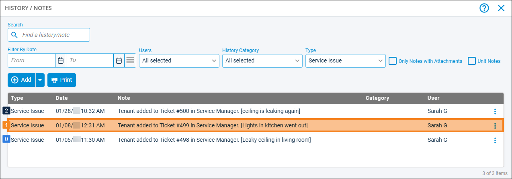
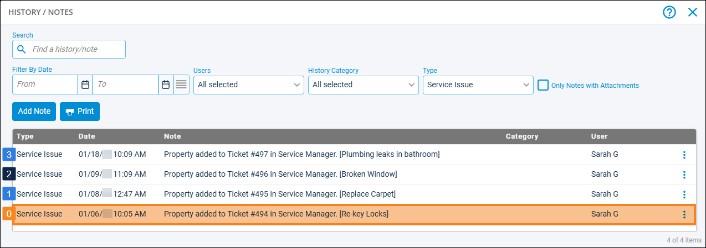
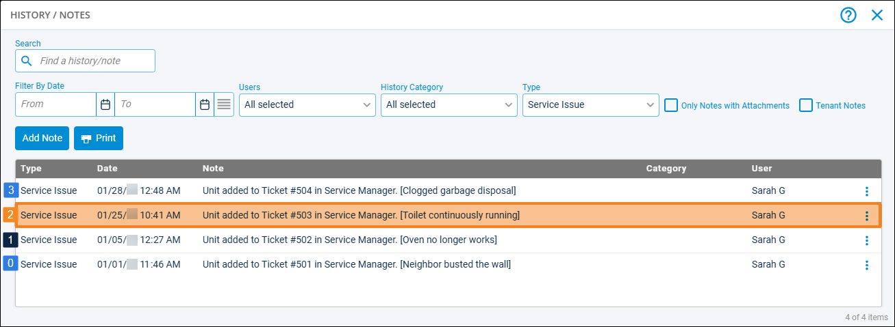

Source: https://rmxhelp.rentmanager.com/Topics/Express/KB/Script-Index-Service-Manager.htm
Service Manager Indexing
In scripting, an index is how instances of an entity or other record are counted in a script. Indexing manages the one-to-many relationship that occurs between two classes.
When the Service Manager class is used as a child class in a script (e.g., Tenant().ServiceManager().Function), an index can be specified to uniquely identify service issues that are associated with the preceding class. For example, tenants may have multiple issues associated with their account, and indexing can be used to identify each of those issues.
Issues are tied to tenants, units, or properties in the Issue Links section of the issue.
Service Manager Index Relationships
Issues associated with a tenant, property, or unit are indexed based upon the system-generated time when the issue was created, from earliest to most recent. The first issue linked to the entity has an index of 0, and the second issue has an index of 1, and so on.
Tenant.ServiceManager Indexing
All issues linked to a tenant display on the History/Notes pop-up, with the prefix Tenant added to Ticket.

[Tenant.ServiceManager(1).Title]
Referencing the image above, this would return Lights in kitchen went out, the second oldest issue linked to the tenant.
Property.ServiceManager Indexing
All issues linked to a property display on the History/Notes pop-up, with the prefix Property added to Ticket.

[Property.ServiceManager(0).Number]
Referencing the image above, this returns 494, the ID number of the oldest issue linked to the property.
Unit.ServiceManager Indexing
All issues linked to a unit display on the History/Notes tab, with the prefix Unit added to Ticket.

[Unit.ServiceManager(2).AssignedOpenDate]
Referencing the image above, this returns 1/25/2026 10:41 AM, the date and time the third oldest issue linked to the unit was opened.